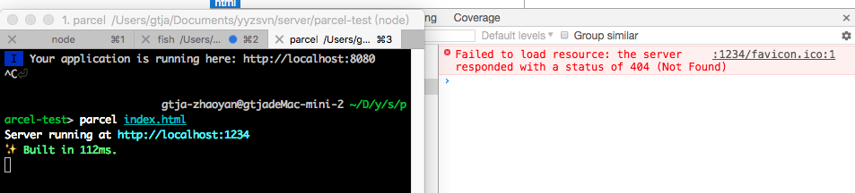
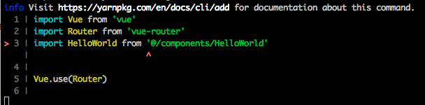
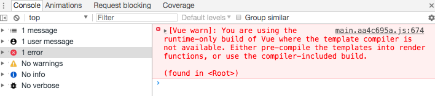

Parcel打包初体验
Parcel号称极速零配置Web应用打包工具，相比于webpack的复杂性，Parcel确实为我们省去了很多配置。使用过facebook/create-react-app的同学应该会发现，creat-react-app也简化了配置，其包含react-scripts包，这个包做的事正与Parcel类似：将所有的打包配置统筹、封装。
Parcel基本用法
安装Parcel
全局安装Parcel:
Yarn:
1 | yarn global add parcel-bundler |
npm:
1 | npm install -g parcel-bundler |
创建、运行项目
创建文件夹，并在文件夹下新建入口html和js文件，html引入入口js文件。
1 | <html> |
1 | console.log("hello world") |
在文件夹下初始化项目：
1 | yarn init -y |
或
1 | npm init -y |
启动服务开始开发：
1 | parcel index.html |
Parcel的基本用法介绍就此为止，就是这么简单，官网上有更详细的介绍。
项目迁移
我们现在尝试将webpack配置的项目迁移到Parcel。
vue-cli webpack
我们首先使用vue-cli创建一个项目:
1 | vue init webpack parcel-test |
首先进入项目运行一下npm run dev，检查是否能运行成功，OK！运行成功。然后我们直接运行parcel index.html
DANG!DANG!

emmmmm...

修改引用路径。重启服务，出现错误

由于我们在`App.vue`中使用了`template`函数，而`import Vue from 'vue'`默认引用的运行时态版（不支持template函数），所以需要改用vue完整版。vue修改`main.js`和`router/index.js`文件中`vue`的引用
1 | import Vue from 'vue/dist/vue.esm.js' |
小缺陷
Parcel目前支持CommonJS 和 ES6 两种模块语法，所以，如果你在index.html页面引入了项目中非上述两种模块语法开发的js，那么可能会出现意外情况。如果还是想引入非CommonJS和ES6模块语法开发的js，目前可以有两种解决方法:
- 如果有源码，则改造代码
- 没有源码，并且还是压缩的，将其放在服务器上，html通过域名引用
- 将第三方的代码内联到html中
总结
总体而言，Parcel确实比webpack要简化很多，几乎是开箱即用。对于没有特殊要求的项目，推荐使用。